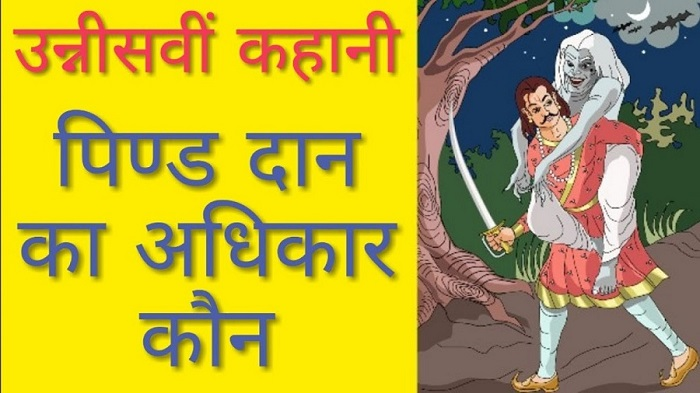

Pind Daan
Birth is not the sign of being son
Vikram was continuing his journey, and Vaitaal was telling him a story -
"Vikram, A Braahman lived in Kaashee Nagaree. He had a beautiful daughter
Leelaa. Once Leelaa was sleeping in her room. Suddenly she woke up hearing
some sound, she asked - "Who is it?" Leelaa saw a young man hiding in a
corner of her room. She asked - "How did you come here? Are you a thief?"
That man said - "Yes, I am a thief, but I have not come to steal anything
from your house. I was just going somewhere else to steal that the soldiers
had seen me and I came here to hide from them. I will go after a while, I
will not harm you, so don't worry."
The then Leelaa heard soldiers' voices. Leelaa believed the thief, so she kept
him in hiding in her room. She got attracted to the thief. She enjoyed his
company. After a while he went away with the promise that he would be
coming there now and then. But he did not come again, because he was caught
by king's soldiers next day only, because he stole things from king's palace.
Leelaa had heard this. That thief was hanged for his crime and thus he was
killed. Leelaa got very sad at this news.
After some time Leelaa came to know that she was pregnant. And at the same
time her marriage was also fixed. Leelaa kept all secrets with her, she did
not tell anyone anything. She got married and she went to her in-law's house.
When the time came Leelaa gave birth to a son. His father was that thief to
whom Leelaa protected from soldiers some months ago. But only Leelaa knew
this. Her husband also did not doubt anything. Gradually that boy grew up and
became a young man. After some time Leelaa's husband died. The same boy
did last rites of his father. Vikram, That boy was very intelligent. Later his
mother also died and he did her last rites also.
Once Pitra Amaavasyaa came, so he thought to do Pind Daan at Phalgu River.
He went to Phalgu River along with a Pandit and completed all formalities of
Pind Daan. When the hands came out to take their share, he asked - "Whose
hand is this?" A voice came - "I am your mother." He gave a Pind to her. He
again asked - "Whose hand is this?" A voice came - "I am your father." Then
he saw two hands rising. Whose is this third hand?" The voice came - "I am
your father."
Hey Vikram, The man got confused seeing two hands as his father's. He
asked the first hand - "How are you my father?" That hand was thief's hand,
so the thief told him everything. The son said nothing. Then he asked the
second hand - "How are you my father?" The voice came - "I have brought
you up the whole life and considered you as my own son, and today you are not
recognizing your own father?" The son got confused, to whom to consider his
father? To whom to offer Pind Daan? Vaitaal said - "Now Vikram, you judge,
to whom that man should offer Pind Daan?"
Vikram said - "Vaitaal, Nobody becomes father just only by giving birth, who
has brought up the child, he is his father. That is why he should offer Pind
Daan to the second hand."
Vaitaal kept quiet for some time, then said - "You are right, Vikram, You are
one hundred per cent right." The he jumped away from his shoulder, ran away
and hung upside down from the same tree. But Vikram brought him back and
continued his journey. Vaitaal again started his story--